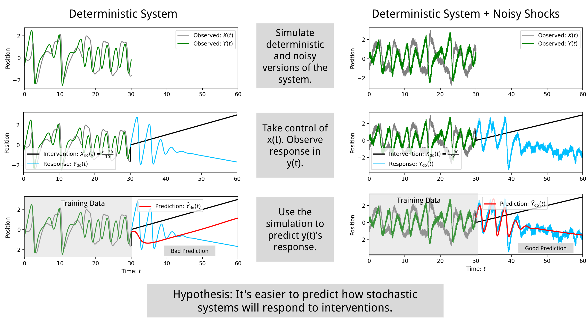

Interfere: Studying Intervention Response Prediction in Complex Dynamic Models (Extended Version)
Authors: D. J. Passey, Alice C. Schwarze, Zachary M. Boyd, Peter J. Mucha
Summary
The vision of Interfere is simple: What if we used high-quality scientific models to create causal dynamic benchmark scenarios? Randomized experimental data and intervention response time series are essential for testing methods that attempt to infer dynamic relationships from data, but obtaining such datasets can be expensive and difficult. Mechanistic models are commonly developed to simulate scenarios and predict the response of systems to interventions across economics, neuroscience, ecology, systems biology and other areas 1234. Because these models are calibrated to the real world, they have the ability to generate diverse, complex, synthetic intervention responses that are characteristic of the real processes they emulate. Interfere offers the first steps towards this vision by combining (1) a general interface for simulating the effect of interventions on dynamic models, (2) a suite of predictive methods and cross validated hyper parameter optimization tools, and (3) the first known extensible benchmark data set of dynamic intervention response scenarios (see Figure 1).

Figure 1. Three-dimensional trajectories of sixty scenarios simulated with the Interfere package. The models simulated here are either differential equations or discrete time difference equations. For each system, the trajectory in blue represents the natural behavior of the system and the red depicts how the system responds to a specified intervention. Many of the models pictured have more than three dimensions (in such cases, only the three dimensions of the trajectory with the highest variance are shown). These sixty scenarios make up the Interfere Benchmark 1.1.1 for intervention response prediction which is available online for download.
Statement of Need
Over the past twenty years, the scientific community has experienced the emergence of multiple frameworks for identifying causal relationships in observational data 567. The most influential frameworks are probabilistic and, while it is not a necessary condition for identifying causality, historically a static, linear relationship has often been assumed. However, when attempting to anticipate the response of complex dynamic systems in the medium and long term, a linear approximation of the dynamics can be insufficient. Therefore, researchers have increasingly begun to employ non-linear, dynamic techniques for causal discovery and forecasting (e.g., 8). Still, there are relatively few techniques that are able to fit causal dynamic nonlinear models to data. Because of this, we see an opportunity to bring together the insights from recent advancements in causal inference with historical work in dynamic modeling and simulation.
In order to facilitate this cross pollination, we focus on a key problem --- predicting how a complex system responds to a previously unobserved intervention --- and designed the Interfere package for benchmarking tools aimed at intervention response prediction. The dynamic models contained in Interfere present challenges for computational methods that can likely only be addressed with the incorporation of mechanistic assumptions alongside probabilistic frameworks for causality. The Interfere package is a toolbox that allows researcher to validate predictive dynamic methods against simulated intervention scenarios. As such, the Interfere package encourages an opportunity for cross pollination between the probabilistic causal inference community and the modeling and simulation community.
Usage
The Interfere package is designed around four tasks: (1) simulation, (2) intervention, (3) forecasting method optimization and (4) intervention response prediction. The following section will describe each task in detail alongside example code.
1. Simulation
The models implemented in the Interfere package are mainly stochastic differential equations (e.g. $d\mathbf{X} = A \mathbf{X} + d\mathbf{W}$) simulated with the users choice of Ito's method or SR1, (a strong Runge-Kutta method, see 9) or stochastic difference equations (e.g. $x[n+1] = 0.25 x[n] - 0.5 x[n-1]$), simulated via initial conditions and stepping forward in time. Each dynamic model class included in the Interfere package has a simulate method. To run a simulation, the package requires an array of equally spaced time values and and array containing initial conditions or historic observations. For example, the following code block produces the trajectories similar to those plotted in Figure 2:
import numpy as np
import interfere
import optuna
# Set up simulation parameters
initial_cond = np.random.rand(3)
t_train = np.arange(0, 10, 0.05)
dynamics = interfere.dynamics.Belozyorov3DQuad(sigma=0.5)
# Generate trajectory
sim_states = dynamics.simulate(t_train, initial_cond)

Figure 2. Simulation of System: The natural, uninterupted evolution of the quaratic Belozyorov system 10 with the addition of a small amount of stochastic noise simulated using the Interfere package (only two of three dimensions shown).
2. Intervention
Next, we can take exogenous control of $x$ by pinning it to $\sin(t)$ and simulate the response of $y$. The resulting simulation reveals how the behavior of the system is altered by this particular intervention. See Figure 3 to see how the quadratic Belozyorov system 10 responds to this intervention.
# Time points for the intervention simulation
test_t = np.arange(t_train[-1], 15, 0.05)
# Intervention initialization
intervention = interfere.SignalIntervention(iv_idxs=1, signals=np.sin)
# Simulate intervention
interv_states = dynamics.simulate(
test_t,
prior_states=sim_states,
intervention=intervention,
)

Figure 3. System trajectory with intervention: The figure above demonstrates the effect that taking exogenous control of $x(t)$ by via $\text{do}(x(t)=\sin(t))$ has on $y$. The intervention (black) and response (blue), depict a clear departure from the natural evolution behavior of the system.
3. Optimization
Interfere offers tools to optimize forecasting methods for time series prediction. By using Interfere's cross validation objective function along with a hyperparameter optimizer such as Optuna 11, it is possible to compare hyperparameter settings on multiple folds of time series data, the data can be purely observational (as in the benchmark) or contain interventions and responses. Every Interfere forecasting method comes with sensible preset hyperparameter ranges for the optimizer to explore. Hyperparameter optimization of cross validated error is demonstrated in the following code block.
# Select the SINDy method for hyperparameter optimization.
method_type = interfere.SINDy
# Create an objective function that aims to minimize cross validation error
# over different hyper parameter configurations for SINDy
cv_obj = interfere.CrossValObjective(
method_type=method_type,
data=sim_states,
times=t_train,
train_window_percent=0.3,
num_folds=5,
exog_idxs=intervention.iv_idxs,
)
# Run the study using optuna.
study = optuna.create_study()
study.optimize(cv_obj, n_trials=25)
# Collect the best hyperparameters into a dictionary.
best_param_dict = study.best_params
4. Intervention Response Prediction
Using the best parameters from the hyperparameter optimization run, we can fit the forecasting method to all the data that occurred prior to the intervention, treating the states we plan to manipulate as exogenous. This way, the method expects to be given exogenous data about the intervention variable(s). After fitting to the unperturbed system, we forecast the intervention response by treating the desired intervention as an exogenous input signal applied during forecasting. Figure 4 demonstrates the optimized model's ability to forecast the intervention response.
# Initialize SINDy with the best perfoming parameters.
method = interfere.SINDy(**study.best_params)
# Use an intervention helper function to split the pre-intervention data
# into endogenous and exogenous columns.
Y_endog, Y_exog = intervention.split_exog(sim_states)
# Fit SINDy to the pre-intervention data.
method.fit(t_train, Y_endog, Y_exog)
# Use the inherited interfere.ForecastMethod.simulate() method
# To simulate intervention response using SINDy
pred_traj = method.simulate(
test_t, prior_states=sim_states, intervention=intervention
)

Figure 4. Forecasting Intervention Response: Example of forecasting the response of the Belozyorov system to a sinusoidal intervention. Here, the intervention consists of taking exogenous control of $x(t)$ (black). The ground truth response, $y(t)$ for $t > 10$ is plotted in blue. Here, an equation discovery algorithm, SINDy, 12 is fit to the data that occurs prior to the intervention and makes an attempt to predict the intervention response (red curve). However, not all intervention responses can be so accurately predicted. See the bottom left of Figure 5 for a failed forecast scenario.
Primary Contributions
The Interfere package provides three primary contributions. (1) Dynamically diverse counterfactuals at scale, (2) cross diciplinary forecast methods, and (3) comprehensive and extensible benchmarking.

Figure 5. Example experimental setup possible with Interfere: Can stochasticity help reveal associations between variables? Interfere can be used to comparing intervention response prediction for deterministic and stochastic versions of the same system.
1. Dynamically Diverse Counterfactuals at Scale
The "dynamics" submodule in the Interfere package contains over fifty dynamic models. It contains a mix of linear, nonlinear, chaotic, continuous time, discrete time, stochastic, and deterministic models. The models come from a variety of disciplines including finance, ecology, biology, neuroscience and public health. Each model inherits the from the Interfere BaseDynamics type and gains the ability to take exogenous control of any observed state and to add measurement noise. Most models also gain the ability to make any observed state stochastic where magnitude of stochasticity can be controlled by a simple scalar parameter or fine tuned with a covariance matrix.
Because of the difficulty of building models of complex systems, predictive methods for complex dynamics are typically benchmarked on less than ten dynamical systems 1312141516. As such, Interfere offers a clear improvement over current benchmarking methods for prediction in complex dynamics.
Most importantly, Interfere is built around interventions: the ability to take exogenous control of one or several state variables in a complex system and observe the response. Imbuing a suite of scientific models with general exogenous control is no small feat because models can be complex and are implemented in a variety of ways. Interfere offers the ability to produce complex dynamic intervention response and standard forecasting scenarios at scale. This unique feature enables large scale evaluation of dynamic causal prediction methods—tested against systems with properties of interest to scientists. For example, we can simulate the change in concentration of ammonia based on the nitrogen cycle and an exogenous fertilizing schedule.
2. Cross Disciplinary Forecast Methods
A second contribution of Interfere is the integration of dynamic forecasting methodologies from deep learning (LSTM, NHITS), applied mathematics (SINDy, Reservoir Computers) and social science (VAR). The Interfere "ForecastMethod" class is expressive enough to describe, fit and predict with multivariate dynamic models and apply interventions to the states of the models during prediction. This cross disciplinary mix of techniques has the potential to produce new insights into the problem of intervention response prediction among others. For example, experiments using this package have revealed that cross validation error does not correlate with well with prediction error when LSTM and NHITS attempt to predict intervention response.
3. Comprehensive and Extensible Benchmarking
The third major contribution of Interfere is the collection of dynamic scenarios organized into the Interfere Benchmark. The Interfere Benchmark is a comprehensive and extensible set of dynamic scenarios that are conveniently available for testing methods that predict the effects of interventions. The benchmark set contains 60 intervention response scenarios for testing, each simulated with different levels of stochastic noise. Each scenario is housed in a JSON file, complete with full metadata annotation, documentation, versioning and commit hashes marking the commit of Interfere that was used to generate the data. The scenarios was revied by hand with some systems exposed to exogenous input to ensure that none of the key variables settle into a steady state. Additionally, all interventions were chosen in a manner such that the response of the target variable is a significant departure from its previous behavior.
The Interfere package enables researchers from various backgrounds to systematically study the problem of predicting intervention response on simulated data from a wide range of disciplines. It thereby facilitates future progress towards correctly anticipating how complex systems will respond in new, never before seen scenarios.
Related Software and Mathematical Foundations
Predictive Methods
The Interfere package draws from the Nixtla open source ecosystem for time series forecasting. We implemented intervention support for LSTM and NHITS from the NeuralForecast package, and for ARIMA from the StatsForecast package 1718. We followed Nixtla's example for cross validation and hyperparameter optimization approaches. We integrated predictive methods from the PySINDy 19 and StatsModels 20 packages. We also include ResComp, a reservoir computing method for global forecasts from 21. Hyperparameter optimization is designed around the Optuna framework 11.
While other forecasting methods exist, integrating a method with Interfere requires that the method is capable of (1) multivariate endogenous dynamic forecasting, (2) support for exogenous variables, and (3) support for flexible length forecast windows or recursive predictions. Few forecasting methods meet these criteria, and it is our hope that this package can encourage the development of additional methods.
Dynamic Models
The table below list the dynamic models that are currently implemented in the Interfere package, plus attributions. These dynamic models in were implemented directly from mathematical descriptions except for two, "Hodgkin Huxley Pyclustering" and "Stuart Landau Kuramoto" which adapt existing simulations from the PyClustering package 22.
| Dynamic Model Class | Description and Source | Properties |
|---|---|---|
| Arithmetic Brownian Motion | Brownian motion with linear drift and constant diffusion 23 | Stochastic, Linear |
| Coupled Logistic Map | Discrete-time logistic map with spatial coupling 24 | Nonlinear, Chaotic |
| Stochastic Coupled Map Lattice | Coupled map lattice with stochastic noise 25 | Nonlinear, Stochastic, Chaotic |
| Michaelis Menten | Model for enzyme kinetics and biochemical reaction networks 26 | Nonlinear, Stochastic |
| Lotka Volterra SDE | Stochastic Lotka-Volterra predator-prey model 27 | Nonlinear, Stochastic |
| Kuramoto | Coupled oscillator model to study synchronization 28 | Nonlinear, Stochastic |
| Kuramoto Sakaguchi | Kuramoto model variant with phase frustration 29 | Nonlinear, Stochastic |
| Hodgkin Huxley Pyclustering | Neuron action-potential dynamics based on Hodgkin-Huxley equations 30 | Nonlinear |
| Stuart Landau Kuramoto | Coupled oscillators with amplitude-phase dynamics 31 | Nonlinear, Stochastic |
| Mutualistic Population | Dynamics of interacting mutualistic species 16 | Nonlinear |
| Ornstein Uhlenbeck | Mean-reverting stochastic differential equation 32 | Stochastic, Linear |
| Belozyorov 3D Quad | 3-dimensional quadratic chaotic system 10 | Nonlinear, Chaotic |
| Liping 3D Quad Finance | Chaotic dynamics applied in financial modeling 33 | Nonlinear, Chaotic |
| Lorenz | Classic chaotic system describing atmospheric convection 34 | Nonlinear, Chaotic |
| Rossler | Simplified 3D chaotic attractor system 35 | Nonlinear, Chaotic |
| Thomas | Chaotic attractor with simple structure and rich dynamics 36 | Nonlinear, Chaotic |
| Damped Oscillator | Harmonic oscillator with damping and noise (Classical linear model) | Linear, Stochastic |
| SIS | Epidemiological model (Susceptible-Infected-Susceptible) 16 | Nonlinear, Stochastic |
| VARMA Dynamics | Vector AutoRegressive Moving Average for time series modeling 37 | Linear, Stochastic |
| Wilson Cowan | Neural mass model for neuronal population dynamics 38 | Nonlinear |
| Geometric Brownian Motion | Stochastic model widely used in financial mathematics 39 | Nonlinear, Stochastic |
| Planted Tank Nitrogen Cycle | Biochemical cycle modeling nitrogen transformation in aquatic systems 40 | Nonlinear |
| Generative Forecaster | Predictive forecasting models trained on simulation, then used to generate data (Written for Interfere) | Stochastic |
| Standard Normal Noise | IID noise from standard normal distribution 31 | Stochastic |
| Standard Cauchy Noise | IID noise from standard Cauchy distribution 31 | Stochastic |
| Standard Exponential Noise | IID noise from standard exponential distribution 31 | Stochastic |
| Standard Gamma Noise | IID noise from standard gamma distribution 31 | Stochastic |
| Standard T Noise | IID noise from Student's t-distribution 31 | Stochastic |
Acknowledgements
The work described here was supported by an NSF Graduate Research Fellowship (DJP) and by award W911NF2510049 from the Army Research Office. The content is solely the responsibility of the authors and does not necessarily represent the official views of any agency supporting this research.
References
-
Flint Brayton, Thomas Laubach, and David Reifschneider. The FRB/US model: a tool for macroeconomic policy analysis. FEDS Notes, pages 03, 2014. doi:10.17016/2380-7172.0012. ↩
-
Eugene M. Izhikevich and Gerald M. Edelman. Large-scale model of mammalian thalamocortical systems. Proceedings of the National Academy of Sciences, 105(9):3593–3598, March 2008. URL: https://pnas.org/doi/full/10.1073/pnas.0712231105 (visited on 2025-03-20), doi:10.1073/pnas.0712231105. ↩
-
H.T. Banks, J.E. Banks, R. Bommarco, A. Curtsdotter, T. Jonsson, and A.N. Laubmeier. Parameter estimation for an allometric food web model. International Journal of Pure and Applied Mathematics, April 2017. URL: http://www.ijpam.eu/contents/2017-114-1/12/ (visited on 2023-10-06), doi:10.12732/ijpam.v114i1.12. ↩
-
Ruth E. Baker, Jose-Maria Peña, Jayaratnam Jayamohan, and Antoine Jérusalem. Mechanistic models versus machine learning, a fight worth fighting for the biological community? Biology Letters, 14(5):20170660, May 2018. URL: https://royalsocietypublishing.org/doi/10.1098/rsbl.2017.0660 (visited on 2025-03-19), doi:10.1098/rsbl.2017.0660. ↩
-
Guido W. Imbens and Donald B. Rubin. Causal Inference for Statistics, Social, and Biomedical Sciences: An Introduction. Cambridge University Press, 1 edition, April 2015. ISBN 978-0-521-88588-1 978-1-139-02575-1. URL: https://www.cambridge.org/core/product/identifier/9781139025751/type/book (visited on 2023-10-05), doi:10.1017/CBO9781139025751. ↩
-
Judea Pearl. Causality. Cambridge University Press, Cambridge, 2 edition, 2009. ISBN 978-0-521-89560-6. URL: https://www.cambridge.org/core/books/causality/B0046844FAE10CBF274D4ACBDAEB5F5B (visited on 2023-10-05), doi:10.1017/CBO9780511803161. ↩
-
Aleksander Wieczorek and Volker Roth. Information theoretic causal effect quantification. Entropy, 21(10):975, October 2019. URL: https://pmc.ncbi.nlm.nih.gov/articles/PMC7514306/ (visited on 2024-11-16), doi:10.3390/e21100975. ↩
-
Jakob Runge. Discovering contemporaneous and lagged causal relations in autocorrelated nonlinear time series datasets. January 2022. arXiv:2003.03685 [stat]. URL: http://arxiv.org/abs/2003.03685 (visited on 2025-03-17), doi:10.48550/arXiv.2003.03685. ↩
-
Andreas Rößler. Runge–Kutta methods for the strong approximation of solutions of stochastic differential equations. SIAM Journal on Numerical Analysis, 48(3):922–952, January 2010. Publisher: Society for Industrial and Applied Mathematics. URL: https://epubs.siam.org/doi/abs/10.1137/09076636X (visited on 2025-05-08), doi:10.1137/09076636X. ↩
-
Vasiliy Ye Belozyorov. Exponential-algebraic maps and chaos in 3D autonomous quadratic systems. International Journal of Bifurcation and Chaos, 25(04):1550048, 2015. Publisher: World Scientific. doi:10.1142/S0218127415500480. ↩↩↩
-
Takuya Akiba, Shotaro Sano, Toshihiko Yanase, Takeru Ohta, and Masanori Koyama. Optuna: a next-generation hyperparameter optimization framework. In The 25th ACM SIGKDD International Conference on Knowledge Discovery & Data Mining, 2623–2631. 2019. ↩↩
-
Steven L. Brunton, Joshua L. Proctor, and J. Nathan Kutz. Discovering governing equations from data by sparse identification of nonlinear dynamical systems. Proceedings of the National Academy of Sciences, 113(15):3932–3937, April 2016. URL: https://pnas.org/doi/full/10.1073/pnas.1517384113 (visited on 2023-10-10), doi:10.1073/pnas.1517384113. ↩↩
-
Cristian Challu, Kin G. Olivares, Boris N. Oreshkin, Federico Garza Ramirez, Max Mergenthaler Canseco, and Artur Dubrawski. NHITS: neural hierarchical interpolation for time series forecasting. Proceedings of the AAAI Conference on Artificial Intelligence, 37(6):6989–6997, June 2023. Number: 6. URL: https://ojs.aaai.org/index.php/AAAI/article/view/25854 (visited on 2025-03-21), doi:10.1609/aaai.v37i6.25854. ↩
-
P.R. Vlachas, J. Pathak, B.R. Hunt, T.P. Sapsis, M. Girvan, E. Ott, and P. Koumoutsakos. Backpropagation algorithms and reservoir computing in recurrent neural networks for the forecasting of complex spatiotemporal dynamics. Neural Networks, 126:191–217, June 2020. URL: https://linkinghub.elsevier.com/retrieve/pii/S0893608020300708 (visited on 2025-02-19), doi:10.1016/j.neunet.2020.02.016. ↩
-
Jaideep Pathak, Brian Hunt, Michelle Girvan, Zhixin Lu, and Edward Ott. Model-free prediction of large spatiotemporally chaotic systems from data: a reservoir computing approach. Physical Review Letters, 120(2):024102, January 2018. Publisher: American Physical Society. URL: https://link.aps.org/doi/10.1103/PhysRevLett.120.024102 (visited on 2025-02-19), doi:10.1103/PhysRevLett.120.024102. ↩
-
Bastian Prasse and Piet Van Mieghem. Predicting network dynamics without requiring the knowledge of the interaction graph. Proceedings of the National Academy of Sciences, 119(44):e2205517119, November 2022. Publisher: Proceedings of the National Academy of Sciences. URL: https://www.pnas.org/doi/10.1073/pnas.2205517119 (visited on 2025-01-14), doi:10.1073/pnas.2205517119. ↩↩↩
-
Kin G. Olivares, Cristian Challú, Azul Garza, Max Mergenthaler Canseco, and Artur Dubrawski. NeuralForecast: user friendly state-of-the-art neural forecasting models. PyCon Salt Lake City, Utah, US 2022, 2022. URL: https://github.com/Nixtla/neuralforecast. ↩
-
Azul Garza, Max Mergenthaler Canseco, Cristian Challú, and Kin G. Olivares. StatsForecast: lightning fast forecasting with statistical and econometric models. PyCon Salt Lake City, Utah, US 2022, 2022. URL: https://github.com/Nixtla/statsforecast. ↩
-
Alan A. Kaptanoglu, Brian M. de Silva, Urban Fasel, Kadierdan Kaheman, Andy J. Goldschmidt, Jared Callaham, Charles B. Delahunt, Zachary G. Nicolaou, Kathleen Champion, Jean-Christophe Loiseau, J. Nathan Kutz, and Steven L. Brunton. Pysindy: a comprehensive Python package for robust sparse system identification. Journal of Open Source Software, 7(69):3994, 2022. URL: https://doi.org/10.21105/joss.03994, doi:10.21105/joss.03994. ↩
-
Skipper Seabold and Josef Perktold. Statsmodels: econometric and statistical modeling with Python. In 9th Python in Science Conference. 2010. doi:10.25080/majora-92bf1922-011. ↩
-
S. Harding, Q. Leishman, W. Lunceford, D. J. Passey, T. Pool, and B. Webb. Global forecasts in reservoir computers. Chaos: An Interdisciplinary Journal of Nonlinear Science, 34(2):023136, February 2024. URL: https://doi.org/10.1063/5.0181694 (visited on 2025-02-19), doi:10.1063/5.0181694. ↩
-
Andrei V. Novikov. Pyclustering: data mining library. Journal of Open Source Software, 4(36):1230, 2019. URL: https://doi.org/10.21105/joss.01230, doi:10.21105/joss.01230. ↩
-
Bernt Karsten Øksendal. Stochastic differential equations: an introduction with applications. Universitext. Springer, Berlin, 6th ed., corrected third printing 2005 edition, 2005. ISBN 978-3-540-04758-2. ↩
-
Alun L Lloyd. The coupled logistic map: a simple model for the effects of spatial heterogeneity on population dynamics. Journal of Theoretical Biology, 173(3):217–230, 1995. Publisher: Elsevier. doi:10.1006/jtbi.1995.0058. ↩
-
Kunihiko Kaneko. Coupled map lattice. In Chaos, Order, and Patterns, pages 237–247. Springer, 1991. ↩
-
Bharath Srinivasan. A guide to the Michaelis–Menten equation: steady state and beyond. The FEBS journal, 289(20):6086–6098, 2022. Publisher: Wiley Online Library. doi:10.1111/febs.16124. ↩
-
Alexandru Hening and Dang H Nguyen. Stochastic Lotka–Volterra food chains. Journal of mathematical biology, 77:135–163, 2018. Publisher: Springer. ↩
-
Francisco A Rodrigues, Thomas K DM Peron, Peng Ji, and Jürgen Kurths. The Kuramoto model in complex networks. Physics Reports, 610:1–98, 2016. Publisher: Elsevier. ↩
-
Hidetsugu Sakaguchi and Yoshiki Kuramoto. A soluble active rotater model showing phase transitions via mutual entertainment. Progress of Theoretical Physics, 76(3):576–581, 1986. Publisher: Oxford University Press. ↩
-
Alan L Hodgkin and Andrew F Huxley. A quantitative description of membrane current and its application to conduction and excitation in nerve. The Journal of physiology, 117(4):500, 1952. ↩
-
Oliver M. Cliff, Annie G. Bryant, Joseph T. Lizier, Naotsugu Tsuchiya, and Ben D. Fulcher. Unifying pairwise interactions in complex dynamics. Nature Computational Science, 3(10):883–893, October 2023. URL: https://doi.org/10.1038/s43588-023-00519-x, doi:10.1038/s43588-023-00519-x. ↩↩↩↩↩↩
-
Crispin Gardiner. Stochastic methods. Volume 4. Springer Berlin Heidelberg, 2009. doi:10.1093/hesc/9780192896599.003.0008. ↩
-
Chen Liping, Muhammad Altaf Khan, Abdon Atangana, and Sunil Kumar. A new financial chaotic model in Atangana-Baleanu stochastic fractional differential equations. Alexandria Engineering Journal, 60(6):5193–5204, 2021. Publisher: Elsevier. doi:10.1016/j.aej.2021.04.023. ↩
-
Edward N Lorenz. Deterministic nonperiodic flow 1. In Universality in Chaos, 2nd edition, pages 367–378. Routledge, 2017. doi:10.1201/9780203734636-38. ↩
-
Otto E Rössler. An equation for continuous chaos. Physics Letters A, 57(5):397–398, 1976. Publisher: Elsevier. ↩
-
René Thomas. Deterministic chaos seen in terms of feedback circuits: analysis, synthesis," labyrinth chaos". International Journal of Bifurcation and Chaos, 9(10):1889–1905, 1999. Publisher: World Scientific. doi:10.1142/S0218127499001383. ↩
-
James D Hamilton. Time series analysis. Princeton university press, 2020. ↩
-
Hugh R Wilson and Jack D Cowan. Excitatory and inhibitory interactions in localized populations of model neurons. Biophysical journal, 12(1):1–24, 1972. Publisher: Elsevier. doi:10.1016/S0006-3495(72)86068-5. ↩
-
Fischer Black and Myron Scholes. The pricing of options and corporate liabilities. Journal of political economy, 81(3):637–654, 1973. Publisher: The University of Chicago Press. ↩
-
Riccardo Fazio and Alessandra Jannelli. Mathematical and numerical modeling for a bio-chemical aquarium. Applied Mathematics and Computation, 174(2):1370–1383, 2006. Publisher: Elsevier. doi:10.1016/j.amc.2005.05.045. ↩